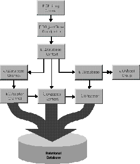
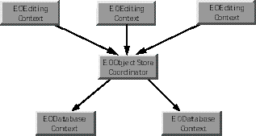

Inherits From:
EOCooperatingObjectStore : EOObjectStore : NSObject
Conforms To: NSObject (NSObject)
Declared in: EOAccess/EODatabaseContext.h
An EODatabaseContext represents a single connection to a database server, and it determines the updating and locking strategy used by its EODatabaseChannel objects. An EODatabaseContext has a corresponding EODatabase object. If the server supports multiple concurrent transactions, the EODatabase object may have several EODatabaseContexts. If the server and adaptor support it, an EODatabaseContext may in turn have several EODatabaseChannels, which handle access to the data on the server.
The relationship between EODatabaseContext and other classes in the control and access layers is illustrated in the following diagram.

As a subclass of EOCooperatingObjectStore, EODatabaseContext acts as one of possibly several EOCooperatingObjectStores for an EOObjectStoreCoordinator, which mediates between EOEditingContexts and EOCooperatingObjectStores.
An EODatabaseContext creates an EOAdaptorContext when initialized, and uses this object to communicate with the database server.
Creating and Using an EODatabaseContext
Though you can create an EODatabaseContext explicitly by using the method registeredDatabaseContextForModel:editingContext:, you should rarely need to do so. When you create an EODatabaseDataSource, it registers an EODatabaseContext that's capable of fetching objects for the data source's entities. If objects fetched into an EOEditingContext (described more in the following section) have references to objects from EOModels that are based on another database, the EODatabaseContext creates and registers an EODatabaseContext for each of the additional databases.
EODatabaseContexts are created on demand when an EOObjectStoreCoordinator posts an EOCooperatingObjectStoreNeeded notification. The EODatabaseContext class registers for the notification, and it provides the EOObjectStoreCoordinator with a new EODatabaseContext instance that can handle the request. For more discussion of this topic, see the chapter "Application Configurations" in the Enterprise Objects Framework Developer's Guide.
For the most part, you don't need to programmatically interact with an EODatabaseContext. However, some of the reasons you might want to are as follows:

When an EOEditingContext fetches objects, the request is passed through the EOObjectStoreCoordinator, which forwards it to the appropriate EODatabaseContext based on the fetch specification or global ID. When the EODatabaseContext receives a request to fetch or write information to the database, it tries to use one of its EODatabaseChannels. If all of its channels are busy, it broadcasts an EODatabaseChannelNeededNotification in the hopes that an observer can provide a new channel or that an existing channel can be freed up. This observer could be a manager that decides how many database cursors can be opened by a particular client.
EODatabaseContext knows how to interact with other EOCooperatingObjectStores to save changes made to an object graph in more than one database server. For a more detailed discussion of this subject, see the class specifications for EOObjectStoreCoordinator and EOCooperatingObjectStore.
Setting a Fetch Limit
EODatabaseContext defines a hint for use with an EOFetchSpecification in the objectsWithFetchSpecification:editingContext: method. Named by the key EOFetchLimitHintKey, the hint's value is an NSNumber containing an unsigned integer value indicating the maximum number of objects to fetch. Depending on the value of the EOPromptAfterFetchLimitHintKey (YES or NO), the EODatabaseContext will either stop fetching objects when this limit is reached or it will ask the EOEditingContext's message handler to ask the user whether it should continue fetching.
Using a Custom Query
EODatabaseContext defines a hint for use with an EOFetchSpecification in the objectsWithFetchSpecification:editingContext: method. Named by the key EOCustomQueryExpressionHintKey, the hint's value is a SQL string for performing the fetch. The expression must query the same attributes in the same order that Enterprise Objects Framework would if it were generating the SELECT expression dynamically. If this key is supplied, other characteristics of the EOFetchSpecification such as isDeep, qualifier, and sortOrderings are ignored-in that sense this key is more of a directive than a hint.
Faulting
When an EODatabaseContext fetches an object, it examines the relationships defined in the model and creates objects representing the destinations of the fetched object's relationships. For example, if you fetch an employee object, you can ask for its manager and immediately receive an object; you don't have to get the manager's employee ID from the object you just fetched and fetch the manager yourself.
EODatabaseContext doesn't immediately fetch data for the destination objects of relationships, however, since fetching is fairly expensive. To avoid this waste of time and resources, the destination objects of the class EOFault are created as placeholders. EOFaults come in two varieties: single object faults for to-one relationships, and array faults for to-many relationships.
When an EOFault is accessed (sent a message), it triggers its EODatabaseContext to fetch its data and transform it into an instance of the appropriate object class. This preserves both the object's id and its EOGlobalID.
You can fine-tune faulting behavior for additional performance gains by using two different mechanisms: batch faulting, and prefetching relationships.
Batch Faulting
When you access an EOFault, its data is fetched from the database. However, triggering one fault has no effect on other faults-it just fetches the object or array of objects for the one fault. You can take advantage of this expensive round trip to the database server by batching faults together. EODatabaseContext provides the batchFetchRelationship:forSourceObjects:editingContext: method for doing this. For example, given an array of Employee objects, this method can fetch all of their departments with one round trip to the server, rather than asking the server for each of the employee's departments individually. You can use the delegate methods databaseContext:shouldFetchArrayFault: and databaseContext:shouldFetchObjectFault: to fine-tune batch faulting behavior.
You can also set batch faulting in an EOModel. In that approach, you specify the number of faults that should be triggered along with the first fault; you don't actually control which faults are triggered the way you do with batchFetchRelationship:forSourceObjects:editingContext:. For more information on setting batch faulting in an EOModel, see the chapter "Using EOModeler" in the Enterprise Objects Framework Developer's Guide.
Prefetching Relationships
EODatabaseContext defines a hint for use with an EOFetchSpecification in the objectsWithFetchSpecification:editingContext: method. Named by the key EOPrefetchingRelationshipHintKey, the hint's value is an NSArray of relationship paths whose destinations should be fetched along with the objects specified. For example, when fetching Movies, you can provide a prefetching hint for "directors", "roles.talent", and "plotSummary" to force these objects to be fetched as well, as opposed to having faults created for them. Although prefetching increases the initial fetch cost, it can improve overall performance by reducing the number of round trips made to the database server.
Using this key also has an effect on how an EOFetchSpecification refreshes. "Refreshing" refers to existing objects being overwritten with fetched values-this allows your application to see changes to the database that have been made by someone else. Normally, when you set an EOFetchSpecification to refresh using setRefreshesRefetchedObjects:, it only refreshes the objects you're fetching. For example, if you fetch employees, you don't also fetch the employees' departments. However, if you have the EOPrefetchingRelationshipHintKey set, the refetch is propagated for all of the relationships specified for the hint.
Delegate Methods
An EODatabaseContext shares its delegate with its EODatabaseChannel. These delegate methods are actually sent from EODatabaseChannel, but they're defined in EODatabaseContext for ease of access:
databaseContext:newPrimaryKeyForObject:entity:), how and if objects are locked (databaseContext:shouldLockObjectWithGlobalID:snapshot:), what fetch specification is used to fetch objects (databaseContext:shouldSelectObjectsWithFetchSpecification:databaseChannel:), how batch faulting is performed (databaseContext:shouldFetchArrayFault: and databaseContext:shouldFetchObjectFault: ), and so on. For more information, see the individual delegate method descriptions.
Snapshots
An EODatabase records snapshots for its EODatabaseContexts. These snapshots form the application's view of the current state of the database server. This global view is overridden locally by EODatabaseContexts, which form their own snapshots as they make changes during a transaction. When an EODatabaseContext commits its top-level transaction, it reconciles all changed snapshots with the global view of the database object, so that other EODatabaseContexts (except those with open transactions) immediately use the new snapshots as well.
Updating And Locking Strategies
EODatabaseContext supports two updating strategies defined by the EOUpdateStrategy type: EOUpdateWithOptimisticLocking , and EOUpdateWithPessimisticLocking .
EOUpdateWithOptimisticLocking is the default update strategy. Under optimistic locking, objects aren't locked immediately on being fetched from the server. Instead, whenever you attempt to save updates to an object in the database, the object's snapshot is used to ensure that the values in the corresponding database row haven't changed since the object was fetched. As long as the snapshot matches the values in the database, the update is allowed to proceed.
The EOUpdateWithPessimisticLocking strategy causes objects to be locked in the database when they're selected. This ensures that no one else can modify the objects until the transaction ends. However, this doesn't necessarily mean that either the select or the update operation will succeed.
EODatabaseContext also supports "on-demand" locking, in which specific optimistic locks can be promoted to database locks during the course of program execution. You can either use lockObjectWithGlobalID:editingContext: to lock a database row for a particular object, or objectsWithFetchSpecification:editingContext: to fetch objects with a fetch specification that includes locking.
For more discussion of locking strategies, see the chapter "Behind the Scenes" in the Enterprise Objects Framework Developer's Guide.
contextClassToRegisterReturns the class that is registered with an EOObjectStoreCoordinator when the coordinator broadcasts an EOCooperatingObjectStoreNeeded notification. By default this is EODatabaseContext, but you can use setContextClassToRegister: to specify your own subclass of EODatabaseContext.
When an EOObjectStoreCoordinator sends an EOCooperatingObjectStoreNeeded notification for an entity in the default model group, if contextClassToRegister is non-nil (and it should be-it makes no sense to set contextClassToRegister to nil), an instance of the contextClass is created, the model for the entity is registered, and the contextClass is registered with the requesting EOObjectStoreCoordinator.
registeredDatabaseContextForModel:editingContext:
+ (EODatabaseContext *)registeredDatabaseContextForModel:(EOModel *)aModel editingContext:(EOEditingContext *)anEditingContext
Finds the EOObjectStoreCoordinator for anEditingContext and checks to see if it already contains an EODatabaseContext cooperating object store for aModel. If it does, it returns that EODatabaseContext. Otherwise it instantiates a new EODatabaseContext, adds it to the EOObjectStoreCoordinator, and returns the EODatabaseContext.
setContextClassToRegister:
+ (void)setContextClassToRegister:(Class)contextClass
Sets to contextClass the "contextClassToRegister." For more discussion of this topic, see the method description for contextClassToRegister .
adaptorContext Returns the EOAdaptorContext used by the EODatabaseContext for communication with the database server.
arrayFaultWithSourceGlobalID:relationshipName:editingContext:
- (NSArray *)arrayFaultWithSourceGlobalID: (EOGlobalID *)globalID
relationshipName: (NSString *)name
editingContext: (EOEditingContext *)anEditingContext
Overrides the EOObjectStore method arrayFaultWithSourceGlobalID:relationshipName:editingContext: to create a to-many fault for anEditingContext. name must correspond to an EORelationship in the EOEntity for the specified globalID.
See also: - faultForGlobalID:editingContext:
availableChannel
- (EODatabaseChannel *)availableChannel
Returns an EODatabaseChannel that's registered with the receiver and that isn't busy. If the method can't find a channel that meets these criteria, it posts an EODatabaseChannelNeededNotification in the hopes that someone will provide a new channel. After posting the notification, the receiver checks its list of channels again. If there are still no available channels, the receiver creates an EODatabaseChannel itself. However, if the list is not empty and there are no available channels, the method returns nil.
See also: - registerChannel: , - registeredChannels , - unregisterChannel:
batchFetchRelationship:forSourceObjects:editingContext:
- (void)batchFetchRelationship:(EORelationship *)relationship forSourceObjects:(NSArray *)objects editingContext:(EOEditingContext *)anEditingContext
Clear all the faults for the relationship of anEditingContext's objects and performs a single, efficient, fetch (at most two fetches, if the relationship is many-to-many). This method provides a way to fetch the same relationship for multiple objects. For example, given an array of Employee objects, this method can fetch all of their departments with one round trip to the server, rather than asking the server for each of the employee's departments individually.
commitChanges
- (void)commitChanges
Overrides the EOCooperatingObjectStore method commitChanges to instruct the adaptor to commit the transaction. If the commit is successful, any primary and foreign key changes are written back to the saved objects, database locks are released, and an EOObjectsChangedInStoreNotification (defined in EOObjectStore) is posted describing the committed changes. Raises an exception if the adaptor is unable to commit the transaction; the error message indicates the nature of the problem. You should never need to invoke this method directly.
See also: - performChanges , - rollbackChanges
coordinator
- (EOObjectStoreCoordinator *)coordinator
Returns the receiver's EOObjectStoreCoordinator or nil if there is none. This method is only valid during a save operation.
database
- (EODatabase *)database
Returns the receiver's EODatabase.
Returns the receiver's delegate.
faultForGlobalID:editingContext:
- (id)faultForGlobalID: (EOGlobalID *)globalID editingContext: (EOEditingContext *)anEditingContext
Overrides the EOObjectStore method faultForGlobalID:editingContext: to create a to-one fault for the object identified by globalID and register it in anEditingContext.
See also: - arrayFaultWithSourceGlobalID:relationshipName:editingContext:
forgetAllLocks
- (void)forgetAllLocks
Clears all of the receiver's locks. Doesn't cause the locks to be forgotten in the server, only in the receiver. This method is useful when something has happened to cause the server to forget the locks and the receiver needs to be synched up. This method is invoked whenever a transaction is committed or rolled back.
See also:
- registerLockedObjectWithGlobalID: , - isObjectLockedWithGlobalID: ,
- isObjectLockedWithGlobalID:editingContext: ,
- forgetLocksForObjectsWithGlobalIDs: , - lockObjectWithGlobalID:editingContext: ,
- lockObject : (EOEditingContext)
forgetLocksForObjectsWithGlobalIDs:
- (void)forgetLocksForObjectsWithGlobalIDs:(NSArray *)globalIDs
Clears the locks made for the enterprise objects identified by each of the EOGlobalIDs globalIDs. Doesn't cause the locks to be forgotten in the server, only in the receiver.
See also:
- registerLockedObjectWithGlobalID: , - isObjectLockedWithGlobalID: ,
- isObjectLockedWithGlobalID:editingContext: , - forgetAllLocks ,
- lockObjectWithGlobalID:editingContext: , - lockObject: (EOEditingContext)
forgetSnapshotForGlobalID:
- (void)forgetSnapshotForGlobalID:(EOGlobalID *)globalID
Deletes the snapshot made for the enterprise object identified by globalID.
See also: - recordSnapshot:forGlobalID: , - localSnapshotForGlobalID: , - recordSnapshots: , - snapshotForGlobalID: , - forgetSnapshotsForGlobalIDs:
forgetSnapshotsForGlobalIDs:
- (void)forgetSnapshotsForGlobalIDs:(NSArray *)globalIDs
Deletes the snapshots made for the enterprise objects identified by globalIDs.
See also: - recordSnapshot:forGlobalID: , - localSnapshotForGlobalID: , - recordSnapshots: , - snapshotForGlobalID:
handlesFetchSpecification:
- (BOOL)handlesFetchSpecification:(EOFetchSpecification *)fetchSpecification
Overrides the EOCooperatingObjectStore handlesFetchSpecification: method to return YES if the receiver is responsible for fetching the objects described by the entity name in fetchSpecification.
See also: - ownsObject: , - ownsGlobalID:
hasBusyChannels
- (BOOL)hasBusyChannels
Returns YES if the receiver's EOAdaptorContext has channels that have outstanding operations (that is, have a fetch in progress), NO otherwise.
initializeObject:withGlobalID:editingContext:
- (void)initializeObject:(id)object withGlobalID:(EOGlobalID *)globalID editingContext:(EOEditingContext *)anEditingContext
Overrides EOObjectStore's initializeObject:withGlobalID:editingContext: to initialize object for anEditingContext by filling it with properties based on row data fetched from the adaptor. The snapshot for globalID is looked up and those attributes in the snapshot that are marked as class properties in the EOEntity are assigned to object. For relationship class properties, faults are constructed and assigned to the object.
initWithDatabase:
- initWithDatabase:(EODatabase *)aDatabase
Initializes a newly allocated EODatabaseContext with aDatabase as the EODatabase object it works with. The new EODatabaseContext retains aDatabase. Returns self , or nil if unable to create another EOAdaptorContext for the EOAdaptor of aDatabase. This is the designated initializer for the EODatabaseContext class.
invalidateAllObjects
- (void)invalidateAllObjects
Overrides the EOObjectStore method invalidateAllObjects to discard all snapshots in the receiver's EODatabase, forget all locks, and post an EOAllObjectsChangedInObjectStoreNotification, as well as an EOObjectsChangedInStoreNotification with the invalidated global IDs in the userInfo dictionary. Both of these notifications are defined in EOObjectStore. This method works by invoking invalidateObjectsWithGlobalIDs: for all of the snapshots in the receiver's EODatabase.
invalidateObjectsWithGlobalIDs:
- (void)invalidateObjectsWithGlobalIDs:(NSArray *)globalIDs
Overrides the EOObjectStore method invalidateObjectsWithGlobalIDs: to discard the snapshots for the objects identified by the EOGlobalIDs globalIDs and broadcasts an EOObjectsChangedInStoreNotification (defined in EOObjectStore), which causes the EOEditingContext containing objects fetched from the receiver to refault those objects. The result is that these objects will be refetched from the database the next time they're accessed.
isObjectLockedWithGlobalID:
- (BOOL)isObjectLockedWithGlobalID:(EOGlobalID *)globalID
Returns YES if the enterprise object identified by globalID is locked, NO otherwise.
See also:
- registerLockedObjectWithGlobalID: , - forgetAllLocks ,
- isObjectLockedWithGlobalID:editingContext: ,
- forgetLocksForObjectsWithGlobalIDs: , - lockObjectWithGlobalID:editingContext: ,
- lockObject : (EOEditingContext)
isObjectLockedWithGlobalID:editingContext:
- (BOOL)isObjectLockedWithGlobalID:(EOGlobalID *)globalID editingContext:(EOEditingContext *)anEditingContext
Overrides the EOObjectStore method isObjectLockedWithGlobalID:editingContext: to return YES if the database row corresponding to globalID has been locked in an open transaction held by the receiver.
See also:
- registerLockedObjectWithGlobalID: , - isObjectLockedWithGlobalID: , - forgetAllLocks ,
- forgetLocksForObjectsWithGlobalIDs: , - lockObjectWithGlobalID:editingContext: ,
- lockObject: (EOEditingContext)
localSnapshotForGlobalID:
- (NSDictionary *)localSnapshotForGlobalID:(EOGlobalID *)globalID
Returns the snapshot for the object identified by globalID, if there is one; else returns nil. Only searches locally (in the transaction scope), not in the EODatabase.
See also: - recordSnapshot:forGlobalID: , - forgetSnapshotForGlobalID: , - recordSnapshots: , - snapshotForGlobalID:
localSnapshotForSourceGlobalID:relationshipName:
- (NSArray *)localSnapshotForSourceGlobalID:(EOGlobalID *)globalID relationshipName:(NSString *)name
Returns an array that is the snapshot for the objects at the destination of the to-many relationship named name, which is a property of the object identified by globalID. The returned array contains the globalIDs of the destination objects. If there is no snapshot, returns nil. Only searches locally (in the transaction scope), not in the EODatabase.
See also: - recordSnapshot:forSourceGlobalID:relationshipName: , - snapshotForSourceGlobalID:relationshipName:
lockObjectWithGlobalID:editingContext:
- (void)lockObjectWithGlobalID:(EOGlobalID *)globalID editingContext:(EOEditingContext *)anEditingContext
Overrides the EOObjectStore method lockObjectWithGlobalID:editingContext: to attempt to lock the database row corresponding to globalID in the underlying database server, on behalf of anEditingContext. If a transaction is not already open at the time of the lock request, the transaction is begun and is held open until either commitChanges or invalidateAllObjects is called. At that point all locks are released. Raises an NSInternalInconsistencyException if unable to obtain the lock.
See also:
- registerLockedObjectWithGlobalID: , - isObjectLockedWithGlobalID: , - forgetAllLocks ,
- forgetLocksForObjectsWithGlobalIDs: , - isObjectLockedWithGlobalID:editingContext: ,
- lockObject: (EOEditingContext)
objectsForSourceGlobalID:relationshipName:editingContext:
- (NSArray *)objectsForSourceGlobalID: (EOGlobalID *)globalID
relationshipName: (NSString *)name
editingContext: (EOEditingContext *)anEditingContext
Overrides the EOObjectStore method objectsForSourceGlobalID:relationshipName:editingContext: to service a to-many fault. The snapshot for the source object identified by globalID is located and the EORelationship named name is used to construct a qualifier from that snapshot. This qualifier is then used to fetch the requested objects into anEditingContext using the method objectsWithFetchSpecification:editingContext:.
objectsWithFetchSpecification:editingContext:
- (NSArray *)objectsWithFetchSpecification:(EOFetchSpecification *)fetchSpecification editingContext:(EOEditingContext *)anEditingContext
Overrides EOObjectStore's objectsWithFetchSpecification: editingContext: method to fetch objects from an external store into anEditingContext. The receiver obtains an available EODatabaseChannel and issues a fetch with fetchSpecification. If one of these objects is already present in memory, by default this method doesn't overwrite its values with the new values from the database (you can change this behavior; see the setRefreshesRefetchedObjects: method in the EOFetchSpecification class specification).
You can fine-tune the fetching behavior by adding hints to fetchSpecification's hints dictionary:
These hints are described in more detail in the Class Description.
You can use this method to implement "on-demand" locking by using a fetchSpecification that includes locking. For more discussion of this subject, see "Updating And Locking Strategies" in the class description.
Raises an exception if an error occurs; the error message indicates the nature of the problem.
See also: - objectsWithFetchSpecification: (EOEditingContext)
ownsGlobalID:
- (BOOL)ownsGlobalID:(EOGlobalID *)globalID
Overrides the EOCooperatingObjectStore method ownsGlobalID: to return YES if the receiver is responsible for fetching and saving the object identified by globalID, NO otherwise. The receiver is determined to be responsible if globalID is a subclass of EOKeyGlobalID and globalID has an entity from one of the receiver's EODatabase's EOModels.
See also: - handlesFetchSpecification: , - ownsObject:
ownsObject:
- (BOOL)ownsObject:(id)object
Overrides the EOCooperatingObjectStore method ownsObject: to return YES if the receiver is responsible for fetching and saving object, NO otherwise. The receiver is determined to be responsible if the entity corresponding to object is in one of the receiver's EODatabase's EOModels.
See also: - ownsGlobalID: , - handlesFetchSpecification:
performChanges
- (void)performChanges
Overrides the EOCooperatingObjectStore method performChanges to construct EOAdaptorOperations from the EODatabaseOperations produced during recordChangesInEditingContext and recordUpdateForObject:changes:. Invokes the delegate method databaseContext:willOrderAdaptorOperationsFromDatabaseOperations: to give the delegate an opportunity to construct alternative EOAdaptorOperations from the EODatabaseOperations. Then invokes the delegate method databaseContext:willPerformAdaptorOperations: to let the delegate substitute its own array of EOAdaptorOperations. Gives the EOAdaptorOperations to an available EOAdaptorChannel for execution. If the save succeeds, updates the snapshots in the receiver to reflect the new state of the server. You should never need to invoke this method directly.
This method raises an exception if the adaptor is unable to perform the operations. The exception's userInfo dictionary contains these keys:
The EODatabaseContext object that was trying to save to its underlying repository when the exception was raised.
The list of database operations the EODatabaseContext was trying to perform when the failure occurred.
The database operation the EODatabaseContext failed to perform.
performAdaptorOperation:. For more information, see the EOAdaptorChannel class specification.See also: - commitChanges , - rollbackChanges
prepareForSaveWithCoordinator:editingContext:
- (void)prepareForSaveWithCoordinator:(EOObjectStoreCoordinator *)coordinator editingContext:(EOEditingContext *)anEditingContext
Overrides the EOCooperatingObjectStore method prepareForSaveWithCoordinator:editingContext: to do whatever is necessary to prepare to save changes. If needed, generates primary keys for any new objects in anEditingContext that are owned by the receiver. This method is invoked before the object graph is analyzed and foreign key assignments are performed. You should never need to invoke this method directly.
recordChangesInEditingContext
- (void)recordChangesInEditingContext
Overrides the EOCooperatingObjectStore method recordChangesInEditingContext to construct a list of EODatabaseOperations for all changes to objects in the EOEditingContext that are owned by the receiver. Forwards any relationship changes discovered but not owned by the receiver to the EOObjectStoreCoordinator. This method is typically invoked in the course of an EOObjectStoreCoordinator saving changes through its saveChangesInEditingContext: method. It's invoked after prepareForSaveWithCoordinator:editingContext: and before performChanges. You should never need to invoke this method directly.
recordSnapshot:forGlobalID:
- (void)recordSnapshot:(NSDictionary *)snapshot forGlobalID:(EOGlobalID *)globalID
Records aSnapshot under globalID. This method only records snapshots locally (in the transaction scope). If you want to record snapshots globally, use the corresponding EODatabase method.
See also: - forgetSnapshotForGlobalID: , - localSnapshotForGlobalID: , - recordSnapshots: , - snapshotForGlobalID:
recordSnapshot:forSourceGlobalID:relationshipName:
- (void)recordSnapshot:(NSArray *)globalIDs forSourceGlobalID:(EOGlobalID *)globalID relationshipName:(NSString *)name
For the object identified by globalID, records an NSArray of globalIDs for the to-many relationship named name. These globalIDs identify the objects at the destination of the relationship. This method only records snapshots locally (in the transaction scope). If you want to record snapshots globally, use the corresponding EODatabase method.
See also: - snapshotForSourceGlobalID:relationshipName: , - localSnapshotForSourceGlobalID:relationshipName: , - recordToManySnapshots:
recordSnapshots:
- (void)recordSnapshots:(NSDictionary *)snapshots
Records the objects in snapshots, which should be snapshot NSDictionaries, under EOGlobalIDs. This method only records snapshots locally (in the transaction scope). If you want to record snapshots globally, use the corresponding EODatabase method.
See also: - recordSnapshot:forGlobalID: , - localSnapshotForGlobalID: , - forgetSnapshotForGlobalID: , - snapshotForGlobalID:
recordToManySnapshots:
- (void)recordToManySnapshots:(NSDictionary *)snapshots
Records the objects in snapshots. snapshots should be an NSDictionary of NSDictionaries, in which the top-level dictionary has as its key the globaID of the enterprise object for which to-many relationships are being recorded. The key's value is a dictionary whose keys are the names of the enterprise object's to-many relationships. Each of these keys in turn has as its value an array of globalIDs that identify the objects at the destination of the relationship.
This method only records snapshots locally (in the transaction scope). If you want to record snapshots globally, use the corresponding EODatabase method.
See also: - recordSnapshot:forSourceGlobalID:relationshipName: , - snapshotForSourceGlobalID:relationshipName: , - localSnapshotForSourceGlobalID:relationshipName:
recordUpdateForObject:changes:
- (void)recordUpdateForObject:(id)object changes:(NSDictionary *)changes
Overrides the EOCooperatingObjectStore method recordUpdateForObject:changes: to communicate to the receiver from another EOCooperatingObjectStore (through the EOObjectStoreCoordinator) that changes need to be made to an object in the receiver. For example, an insert of an object in a relationship property might require changing a foreign key property in an object owned by another EOCooperatingObjectStore. This method can be invoked any time after prepareForSaveWithCoordinator:editingContext: and before performChanges.
refaultObject:withGlobalID:editingContext:
- (void)refaultObject: (id)anObject
withGlobalID: (EOGlobalID *)globalID
editingContext: (EOEditingContext *)anEditingContext
Overrides the EOObjectStore method refaultObject:withGlobalID:editingContext: to refault the enterprise object object identified by globalID in anEditingContext. (You don't refault to-many relationship arrays, you just recreate them.) This method should be used with caution since refaulting an object doesn't remove the object snapshot from the undo stack. Newly inserted objects should not be refaulted since they can't be refetched from the external store. If you attempt to do this, an exception will be raised.
registerChannel:
- (void)registerChannel:(EODatabaseChannel *)channel
Registers channel, which means that it adds it to the availableChannel pool used to service fetch and fault requests. Registered channels are retained by the receiver. You use this method if you need to perform more than one fetch simultaneously.
See also: - availableChannel , - registeredChannels , - unregisterChannel:
registeredChannels
- (NSArray *)registeredChannels
Returns all of the EODatabaseChannels that have been registered for use with the receiver.
See also: - registerChannel: , - availableChannel , - unregisterChannel:
registerLockedObjectWithGlobalID:
- (void)registerLockedObjectWithGlobalID:(EOGlobalID *)globalID
Registers as a locked object the enterprise object identified by globalID.
See also:
- forgetAllLocks , - isObjectLockedWithGlobalID: ,
- isObjectLockedWithGlobalID:editingContext: ,
- forgetLocksForObjectsWithGlobalIDs: , - lockObjectWithGlobalID:editingContext: ,
- lockObject : (EOEditingContext)
rollbackChanges
- (void)rollbackChanges
Overrides the EOCooperatingObjectStore method rollbackChanges to instruct the adaptor to roll back the transaction. Rolls back any changed snapshots, and releases all locks.
See also: - performChanges , - commitChanges
saveChangesInEditingContext:
- (void)saveChangesInEditingContext: (EOEditingContext *)anEditingContext
Overrides the EOObjectStore method saveChangesInEditingContext: to save the changes made in anEditingContext. This message is sent by an EOEditingContext to its EOObjectStore to commit changes. Normally an EOEditingContext doesn't send this message to an EODatabaseContext, but to an EOObjectStoreCoordinator. Raises an exception if an error occurs; the error message indicates the nature of the problem.
setDelegate:
- (void)setDelegate:(id)delegate
Sets the receiver's delegate to delegate, and propagates the delegate to all of the receiver's EODatabaseChannels. EODatabaseChannels share the delegate of their EODatabaseContext.
setUpdateStrategy:
- (void)setUpdateStrategy:(EOUpdateStrategy)strategy
Sets the update strategy used by the EODatabaseContext to strategy. See "Updating And Locking Strategies" in the class description for information on update strategies. Raises an NSInvalidArgumentException if the receiver has any transactions in progress or if you try to set strategy to EOUpdateWithPessimisticLocking and the receiver's EODatabase already has snapshots.
snapshotForGlobalID:
- (NSDictionary *)snapshotForGlobalID:(EOGlobalID *)globalID
Returns the snapshot for the object identified by globalID, if there is one; else returns nil. Searches first locally (in the transaction scope) and then in the EODatabase.
See also: - recordSnapshot:forGlobalID: , - localSnapshotForGlobalID: , - forgetSnapshotForGlobalID: , - recordSnapshots:
snapshotForSourceGlobalID:relationshipName:
- (NSArray *)snapshotForSourceGlobalID:(EOGlobalID *)globalID relationshipName:(NSString *)name
Returns a snapshot that consists of an array of globalIDs. These globalIDs identify the objects at the destination of the to-many relationship named name, which is a property of the object identified by globalID. If there is no snapshot, returns nil.
See also: - recordSnapshot:forSourceGlobalID:relationshipName: , - localSnapshotForSourceGlobalID:relationshipName: , - recordToManySnapshots:
unregisterChannel:
- (void)unregisterChannel:(EODatabaseChannel *)channel
Unregisters the EODatabaseChannel channel, which means that it removes it from the availableChannel pool used for database communication (for example, to service fetch and fault requests).
See also: - registerChannel: , - registeredChannels , - availableChannel
updateStrategy
- (EOUpdateStrategy)updateStrategy
Returns the update strategy used by the receiver. The default strategy is EOUpdateWithOptimisticLocking . See the class description for information on update strategies.
See also: - setUpdateStrategy:
valuesForKeys:object:
- (NSDictionary *)valuesForKeys:(NSArray *)keys object:(id)object
Overrides the EOCooperatingObjectStore method valuesForKeys:object: to return values for the specified keys from the snapshot of object. The returned values are used primarily by another EODatabaseContext to extract foreign key properties for objects owned by the receiver.
Methods Implemented By the Delegate
databaseContext:didFetchObjects:fetchSpecification:editingContext:
- (void)databaseContext:(EODatabaseContext *)aDatabaseContext didFetchObjects:(NSArray *)objects fetchSpecification:(EOFetchSpecification *)fetchSpecification editingContext:(EOEditingContext *)anEditingContext
Invoked from objectsWithFetchSpecification:editingContext: after aDatabaseContext fetches objects using the criteria defined in fetchSpecification on behalf of anEditingContext.
databaseContext:didSelectObjectsWithFetchSpecification:databaseChannel:
- (void)databaseContext:(EODatabaseContext *)aDatabaseContext didSelectObjectsWithFetchSpecification:(EOFetchSpecification *)fetchSpecification databaseChannel:(EODatabaseChannel *)channel
Invoked from the EODatabaseChannel method selectObjectsDescribedByQualifier:... to tell the delegate that channel selected the objects on behalf of aDatabaseContext as specified by fetchSpecification.
databaseContext:failedToFetchObject:globalID:
- (BOOL)databaseContext:(EODatabaseContext *)aDatabaseContext failedToFetchObject:(id)object globalID:(EOGlobalID *)globalID
Sent when a to-one fault cannot find its data in the database. The object is a cleared fault identified by globalID. If this method returns YES, aDatabaseContext assumes that the delegate has handled the situation to its satisfaction, in whatever way it deemed appropriate (for example, by displaying an alert panel or initializing a fault object with new values). If it returns NO or if the delegate method is not implemented, aDatabaseContext raises an NSInternalInconsistencyException.
databaseContext:newPrimaryKeyForObject:entity:
- (NSDictionary *)databaseContext:(EODatabaseContext *)aDatabaseContext newPrimaryKeyForObject:(id)object entity:(EOEntity *)entity
Sent when a newly inserted enterprise object doesn't already have a primary key set. This delegate method can be used to implement custom primary key generation. If the delegate is not implemented or returns nil, then aDatabaseContext will send an EOAdaptorChannel a primaryKeyForNewRowWithEntity: message in an attempt to generate the key.
The dictionary you return from this delegate method contains the attribute or attributes (if object has a compound primary key) that make up object's primary key.
databaseContext:shouldFetchArrayFault:
- (BOOL)databaseContext:(EODatabaseContext *)databaseContext shouldFetchArrayFault:(id)fault
Invoked when a fault is fired, this delegate method lets you fine-tune the behavior of batch faulting. Delegates can fetch the array themselves (for example, by using the EODatabaseContext method batchFetchRelationship:forSourceObjects:editingContext:) and return NO, or return YES to allow the databaseContext to do the fetch itself. If databaseContext performs the fetch it will batch fault according to the batch count on the relationship being fetched.
See also: - databaseContext:shouldFetchObjectFault:
databaseContext:shouldFetchObjectFault:
- (BOOL)databaseContext:(EODatabaseContext *)databaseContext shouldFetchObjectFault:(id)fault
Invoked when a fault is fired, this delegate method lets you fine-tune the behavior of batch faulting. Delegates can fetch the fault themselves (for example, by using the EODatabaseContext method objectsWithFetchSpecification:editingContext:) and return NO, or return YES to allow databaseContext to perform the fetch. If databaseContext performs the fetch, it will batch fault according to the batch count on the entity being fetched.
See also: - databaseContext:shouldFetchArrayFault:
databaseContext:shouldFetchObjectsWithFetchSpecification:editingContext:
- (NSArray *)databaseContext:(EODatabaseContext *)aDatabaseContext shouldFetchObjectsWithFetchSpecification:(EOFetchSpecification *)fetchSpecification editingContext:(EOEditingContext *)anEditingContext
Invoked from objectsWithFetchSpecification:editingContext: to give the delegate the opportunity to satisfy anEditingContext's fetch request (using the criteria specified in fetchSpecification) from a local cache. If the delegate returns nil, aDatabaseContext performs the fetch. Otherwise, the returned array is returned as the fetch result.
databaseContext:shouldInvalidateObjectWithGlobalID:snapshot:
- (BOOL)databaseContext:(EODatabaseContext *)aDatabaseContext shouldInvalidateObjectWithGlobalID:(EOGlobalID *)globalId snapshot:(NSDictionary *)snapshot
Invoked from invalidateObjectsWithGlobalIDs:. Delegate can cause aDatabaseContext's object as identified by globalID to not be invalidated and that object's snapshot to not be cleared by returning NO.
databaseContext:shouldLockObjectWithGlobalID:snapshot:
- (BOOL)databaseContext:(EODatabaseContext *)aDatabaseContext shouldLockObjectWithGlobalID:(EOGlobalID *)globalID snapshot:(NSDictionary *)snapshot
Invoked from lockObjectWithGlobalID:editingContext:. The delegate should return YES if it wants the operation to proceed or NO if it doesn't. Values from snapshot are used to create a qualifier from the attributes used for locking specified for the object's entity (that is, the object identified by globalID). Delegates can override the locking mechanism by implementing their own locking procedure and returning NO. Methods that override the locking mechanism should raise an exception on the failure to lock exactly one object.
databaseContext:shouldRaiseExceptionForLockFailure:
- (BOOL)databaseContext:(EODatabaseContext *)aDatabaseContext shouldRaiseExceptionForLockFailure:(NSException *)exception
Invoked from lockObjectWithGlobalID:editingContext:. This method allows the delegate to suppress an exception that has occurred during aDatabaseContext's attempt to lock the object.
databaseContext:shouldSelectObjectsWithFetchSpecification:databaseChannel:
- (BOOL)databaseContext:(EODatabaseContext *)aDatabaseContext shouldSelectObjectsWithFetchSpecification:(EOFetchSpecification *)fetchSpecification databaseChannel:(EODatabaseChannel *)channel
Invoked from the EODatabaseChannel method selectObjectsDescribedByQualifier:... to tell the delegate that channel will select objects on behalf of aDatabaseContext as specified by fetchSpecification. The delegate should not modify the qualifier or fetch order. If the delegate returns YES the channel will go ahead and select the object; if the delegate returns NO (possibly after issuing custom SQL against the adaptor) the channel will skip the select and return.
databaseContext:shouldUpdateCurrentSnapshot:newSnapshot:globalID:channel:
- (NSDictionary *)databaseContext:(EODatabaseContext *)aDatabaseContext shouldUpdateCurrentSnapshot:(NSDictionary *)currentSnapshot newSnapshot:(NSDictionary *)newSnapshot globalID:(EOGlobalID *)globalID channel:(EODatabaseChannel *)channel
Invoked from the EODatabaseChannel method fetchObject when aDatabaseContext already has a snapshot (currentSnapshot) for a row fetched from the database. This method is invoked without first checking whether the snapshots are equivalent (the check would be too expensive to do in the common case), so the receiver may be passed equivalent snapshots. The default behavior is to not update an older snapshot with newSnapshot. The delegate can override this behavior by returning an NSDictionary (possibly newSnapshot) that will be recorded as the updated snapshot. This will result in an EOObjectsChangedInStoreNotification being broadcast, causing the object store hierarchy to invalidate existing objects (as identified by globalID) built from the obsolete snapshot. Returning nil raises an exception. You can use this method to achieve the same effect as using an EOFetchSpecification with setRefreshesRefetchedObjects: set to YES-that is, it allows you to overwrite in-memory object values with values from the database that may have been changed by someone else.
Returning currentSnapshot causes the aDatabaseContext to perform the default behavior (that is, not updating the older snapshot).
databaseContext:shouldUsePessimisticLockWithFetchSpecification:
- (BOOL)
databaseChannel:databaseContext:(EODatabaseContext *)databaseContext shouldUsePessimisticLockWithFetchSpecification:(EOFetchSpecification *)fetchSpecification databaseChannel:(EODatabaseChannel *)channel
Invoked from the EODatabaseChannel method selectObjectsDescribedByQualifier:... regardless of the update strategy specified on channel's databaseContext. The delegate should not modify the qualifier or fetch order contained in fetchSpecification. If the delegate returns YES the channel locks the rows being selected; if the delegate returns NO the channel selects the rows without locking.
databaseContext:willOrderAdaptorOperationsFromDatabaseOperations:
- (NSArray *)databaseContext:(EODatabaseContext *)aDatabaseContext willOrderAdaptorOperationsFromDatabaseOperations:(NSArray *)databaseOperations
Sent from performChanges. If the delegate responds to this message, it must return an array of EOAdaptorOperations that aDatabaseContext can then submit to an EOAdaptorChannel for execution. The delegate can fabricate its own array by asking each of the databaseOperations for its list of EOAdaptorOperations, and adding them to the array which will eventually be returned by this method. The delegate is free to optimize, order, or transform the list in whatever way it deems necessary. This method is useful for applications that need a special ordering of the EOAdaptorOperations so as not to violate any database referential integrity constraints.
databaseContext:willPerformAdaptorOperations:adaptorChannel:
- (NSArray *)databaseContext:(EODatabaseContext *)aDatabaseContext willPerformAdaptorOperations:(NSArray *)adaptorOperations adaptorChannel:(EOAdaptorChannel *)adaptorChannel
Sent from performChanges. The delegate can return a new adaptorOperations array which aDatabaseContext will hand to adaptorChannel for execution in place of the old array of EOAdaptorOperations. This method is useful for applications that need a special ordering of the EOAdaptorOperations so as not to violate any database referential integrity constraints.
databaseContext:willRunLoginPanelToOpenDatabaseChannel:
- (BOOL)databaseContext:(EODatabaseContext *)aDatabaseContext willRunLoginPanelToOpenDatabaseChannel:(EODatabaseChannel *)channel
When aDatabaseContext is about to use a channel, it checks to see if the channel's corresponding EOAdaptorChannel is open. If it isn't, it attempts to open the EOAdaptorChannel by sending it an openChannel message. If that doesn't succeed, aDatabaseContext will ask the EOAdaptorChannel's adaptor to run the login panel and open the channel. aDatabaseContext gives the delegate a chance to intervene in this by invoking this delegate method. The delegate can return NO to stop aDatabaseContext from running the login panel. In this case, the delegate is responsible for opening the channel. If the delegate returns YES, aDatabaseContext runs the login panel.
The following notification is declared and posted by EODatabaseContext.
EODatabaseChannelNeededNotification